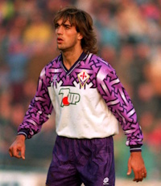
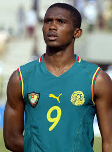

Football shirts have a rich and fascinating history that mirrors the evolution of the sport itself. In the earliest days of football, during the late 19th century, teams typically wore simple, heavy cotton shirts that were often plain and utilitarian. There was little emphasis on design or branding; the main goal was simply to distinguish one team from another, often using basic solid colors or stripes.
As football became more organized and professionalized in the early 20th century, clubs began to adopt more consistent colors and styles that reflected their local identity and traditions. For example, teams from different regions or cities selected colors that had cultural or historical significance. The use of collars and buttons was common in early kits, though these features gradually fell out of favor as comfort and practicality took priority.
In the mid-20th century, technological advances in fabric production brought significant changes. Shirts transitioned from heavy cotton to lighter, more breathable synthetic materials such as polyester, which allowed players greater freedom of movement and better moisture management. This shift greatly improved performance on the field, especially as the pace of the game increased.
The 1970s and 1980s saw the introduction of sponsorship logos and commercial branding on football shirts, marking a new era where kits became important revenue streams for clubs. This commercialization led to a boom in design creativity, with teams experimenting with bold patterns, colors, and fabric technologies like mesh panels for ventilation.
By the 1990s and 2000s, football shirts had become a blend of cutting-edge technology and fashion. Innovations such as moisture-wicking fabrics, stretchable materials, and tailored fits enhanced both athletic performance and player comfort. Brands like Adidas, Nike, and Puma competed fiercely to create iconic kits that fans around the world would want to wear.
In recent years, football shirts have grown beyond their role as mere uniforms to become cultural symbols. Limited edition kits, retro re-releases, and collaborations with designers and artists have turned football shirts into coveted fashion items. They are often seen as expressions of identity and loyalty, with fans proudly wearing their club’s colors not just on match days but as part of everyday style.
Overall, the history of football shirts is a story of innovation, identity, and passion evolving from humble cotton tops to high-tech symbols of culture and sport enjoyed by millions worldwide.

Football Shirt History Quiz
Throughout football history, some shirts have achieved legendary status not only because of their design but also due to the iconic players who wore them and the unforgettable moments they represent. These kits often become symbols of entire eras, remembered fondly by fans and collectors alike.
One of the most famous shirts is Brazil’s 1970 yellow kit, worn by Pelé and his teammates during their dominant World Cup performance. Its vibrant colors and association with 'jogo bonito' (the beautiful game) made it one of the most recognizable football kits in the world.
The red and black stripes of AC Milan are another classic, associated with European dominance in the late 80s and early 90s, worn by legends like Paolo Maldini and Marco van Basten. Similarly, Manchester United's 1998–1999 kit holds legendary status for their treble-winning season.
Other notable kits include Argentina's sky blue and white stripes (as worn by Diego Maradona in 1986), Barcelona’s striped kits during their tiki-taka golden years, and Nigeria’s green 2018 World Cup shirt, praised globally for its bold, fashionable design.
Modern football shirts are engineered for peak athletic performance and fan appeal. Gone are the days of thick cotton fabrics — today's kits are made using high-tech synthetic fibers such as polyester and elastane, designed to be lightweight, breathable, and moisture-wicking.
The production process begins with design, where graphics teams create the layout, colors, sponsor logos, and patterns. These designs are transferred to the fabric using dye-sublimation printing or heat-transfer technology, ensuring vibrant colors that won’t fade easily.
Logos, names, and numbers are added using either embroidery (for premium shirts) or heat pressing. Special features like mesh zones or laser-cut ventilation holes help keep players cool during high-intensity matches. Tailored fits and stretch fabrics also help improve comfort and range of motion.
Once assembled, each shirt undergoes quality control to check stitching, durability, and color consistency. After passing inspection, the shirts are distributed globally both for professional players and for retail fans.
While most football shirts are embraced by fans, some have sparked controversy due to their design choices, political implications, or inappropriate sponsorships. These kits often ignite heated debates and, in some cases, are recalled or banned.
One of the most common controversies surrounds shirt sponsors. Some clubs have been criticized for partnerships with betting companies, alcohol brands, or politically sensitive organizations. For instance, Newcastle United’s deal with a gambling firm drew backlash from health advocates.
Design can also stir opinion — from unflattering patterns to color schemes that clash with tradition. A famous example is Cameroon’s sleeveless shirt in 2002, which was eventually banned by FIFA for not conforming to regulations. Likewise, some clubs have released third kits that bear little resemblance to their usual colors, upsetting loyal fans.
In rare cases, shirts have included political slogans or imagery, leading to bans from governing bodies or outrage from certain communities. Despite the backlash, these controversial kits often become collectors' items due to their rarity and the attention they receive.
Collect classic and good looking jerseys by clicking them, do not touch the bad looking ones or jerseys with errors as it will decrease your score
 